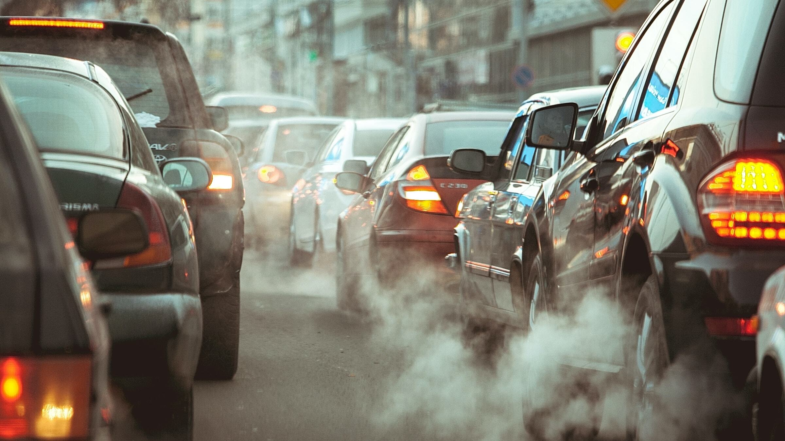
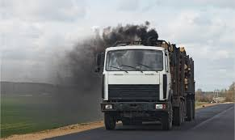
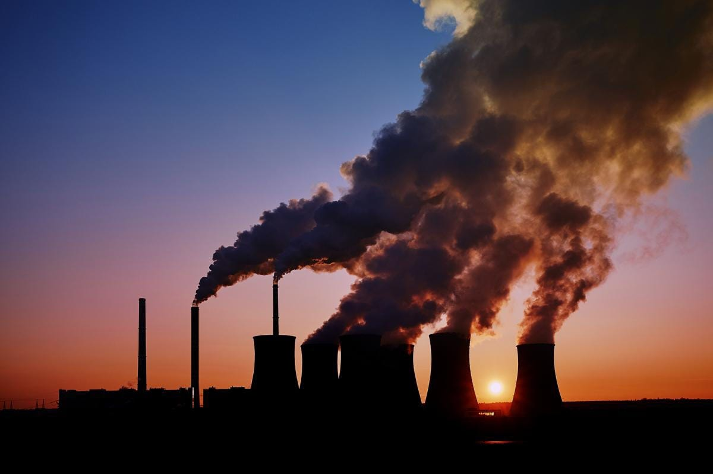
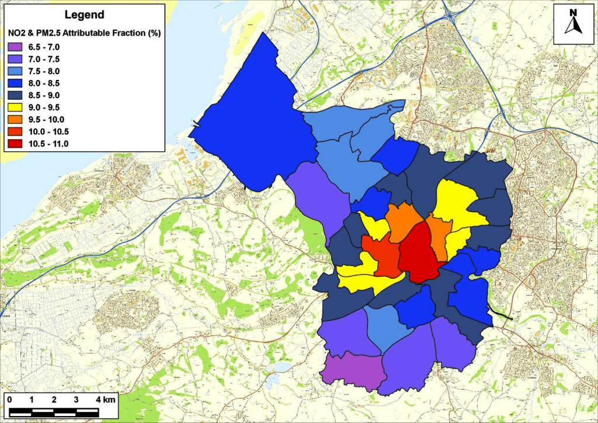

| Site Name | Location | Pollutant | Measurement |
|---|
Pollution in Bristol is primarily caused by urban traffic, industrial activities, and residential heating. Diesel vehicles contribute significantly to nitrogen dioxide levels, while particulate matter originates from construction sites, road dust, and burning fuels. The city's geography and weather patterns can also trap pollutants, exacerbating air quality issues.




If you have any questions or need more information, please get in touch with us: